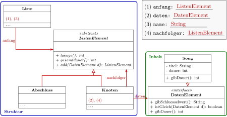
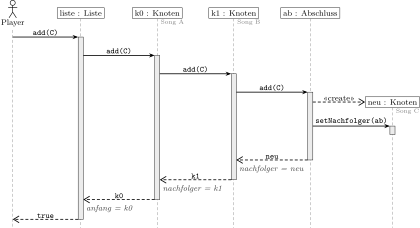
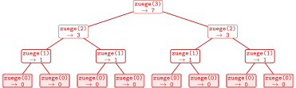

Übung zur 1. Schulaufgabe
Rekursive Datenstrukturen · Informatik 12 · Stationen 1.1 bis 1.5
Hier wiederholst du die Inhalte der Stationen 1.1 bis 1.5 an neuen Beispielen: verkettete Warteschlange, Liste als Kompositum, Klassen- und Sequenzdiagramm, Rekursion. Dazu kommt ein wenig Extra.So arbeitest duErst selbst, dann die Hilfen
Die Aufgaben sind in der Sie-Form gestellt, mit einem Operator, der sagt, was verlangt ist, und mit Bewertungseinheiten (BE). Die Sterne zeigen die Schwierigkeit: ★ Grundlagen, ★★ Anwenden, ★★★ knifflig. Löse zuerst auf Papier und schau dann in die Hilfen: Tipps blenden sich mit einem Klick ein, die Lösung erst nach Gedrückthalten. Wo es passt, kannst du dich zusätzlich mit den Werkstätten der Stationen prüfen.
| Operator | Was du lieferst |
|---|---|
| Nennen Sie, Geben Sie an | nur das Ergebnis, ohne Begründung |
| Bestimmen Sie | Ergebnis mit erkennbarem Weg |
| Beschreiben Sie | einen Ablauf in eigenen Worten mit Fachbegriffen |
| Zeichnen Sie | ein vollständiges Diagramm in der bekannten Notation |
| Erklären Sie, Begründen Sie | nachvollziehbar machen, warum etwas so ist („weil …“) |
| Beurteilen Sie | ein eigenes Urteil mit Gründen: Wann stimmt es, wann nicht? |
Aufgabe 1: WarteschlangeBestellungen beim Pizzadienst (Station 1.1)
Pizzadienst. Ein Pizzadienst nimmt Bestellungen online an. Die Küche bereitet sie in der Reihenfolge zu, in der sie eingehen. Die Bestellungen warten in einer verketteten Warteschlange mit den Attributen anfang und ende.
- (2 BE) ★ Beschreiben Sie, welche Verweise sich ändern, wenn eine Bestellung an eine Warteschlange angehängt wird, in der schon Bestellungen warten, und welche, wenn die Küche die vorderste Bestellung abholt.
- (2 BE) ★★ Ein Mitschüler lässt in
addden Sonderfall für die leere Warteschlange weg: Im Rumpf stehen nur nochKnoten neu = new Knoten(b);,ende.setNachfolger(neu);,ende = neu;undreturn true;. Beschreiben Sie, was bei der ersten Bestellung des Abends passiert, und begründen Sie. - (2 BE) ★★★ Eine Mitschülerin lässt in
poll()die Zeilenif (anfang == null) { ende = null; }weg. Sie meint: „Das ist überflüssig,addsetzt bei einer leeren Schlangeendesowieso neu.“ Beurteilen Sie diese Aussage.
Prüfen kannst du a) und b) in der Zeiger-Werkstatt von 1.1: Dort gibt es auch die Version „add ohne Sonderfall“.
Worauf verweist ende, wenn noch niemand wartet? Was passiert, wenn man auf diesem Verweis eine Methode aufruft?
Woran erkennt add, dass die Schlange leer ist? Und worauf verweist ende, nachdem die letzte Bestellung abgeholt wurde?
a) Anhängen: Der bisher letzte Knoten bekommt den neuen Knoten als Nachfolger, danach verweist ende auf den neuen Knoten (in dieser Reihenfolge). Abholen: anfang rückt auf den Nachfolger des ersten Knotens weiter; nur wenn danach niemand mehr wartet, wird auch ende auf null gesetzt.
b) Bei leerer Schlange ist ende null. ende.setNachfolger(neu) löst eine NullPointerException aus, das Programm bricht ab und die Bestellung geht verloren. Außerdem würde anfang nie gesetzt.
c) Mit diesem add stimmt die Aussage zunächst: isEmpty() prüft anfang == null, und im Sonderfall werden anfang und ende neu gesetzt. Trotzdem ist die Schlange zwischendurch in einem falschen Zustand: ende verweist auf eine Bestellung, die schon abgeholt ist. Jede Methode, die sich auf ende verlässt, arbeitet dann falsch, z. B. ein add, das mit ende == null auf leer prüft. Die Zeilen gehören also hinein.
Aufgabe 2: Liste als KompositumEine Playlist (Stationen 1.2 bis 1.4)
Playlist. Eine Musik-App speichert jede Playlist als Liste nach dem Entwurfsmuster Kompositum. Jeder Song ist ein Objekt der Klasse Song. Ausschnitt aus dem Code (Methodenrümpfe weggelassen):
public class Liste { private ListenElement anfang; private String name; … } public abstract class ListenElement { public abstract int laenge(); public abstract int gesamtdauer(); public abstract ListenElement add(DatenElement d); } public class Knoten extends ListenElement { private DatenElement daten; private ListenElement nachfolger; … } public class Abschluss extends ListenElement { … } public interface DatenElement { String gibSchluesselwert(); boolean istGleich(DatenElement d); int gibDauer(); } public class Song implements DatenElement { private String titel; private int dauer; … }
- (4 BE) ★ Zeichnen Sie das Klassendiagramm zu diesem Code. Methoden müssen Sie nur bei
ListenElementundDatenElementangeben. - (2 BE) ★★ Die App soll zusätzlich Podcasts verwalten. Geben Sie an, welche Klassen dafür neu geschrieben oder geändert werden müssen und welche unverändert bleiben, und begründen Sie mit dem Entwurfsmuster.
- (2 BE) ★★ Die Klasse
Songhatte schon vorher eine MethodegibDauer(). Begründen Sie, warum sie trotzdem zusätzlich im InterfaceDatenElementstehen muss, damit ein Knoten die Gesamtdauer berechnen kann.
Welche Klasse erbt von welcher, welche implementiert ein Interface? Attribute, deren Typ eine eigene Klasse ist, werden als Assoziation mit Namen gezeichnet.
Von welchem Typ ist das Attribut daten im Knoten? Der Compiler prüft nur, ob es die Methode in diesem Typ gibt.

b) Neu: eine Klasse Podcast, die DatenElement implementiert. Unverändert bleiben Liste, ListenElement, Knoten und Abschluss: Die Struktur kennt nur den Vertrag DatenElement, nicht den Inhalt. Das ist der Vorteil der Trennung von Struktur und Inhalt.
c) Im Knoten ist daten vom Typ DatenElement. Der Compiler erlaubt daten.gibDauer() nur, wenn DatenElement diese Methode vorschreibt; dass zur Laufzeit ein Song dahintersteckt, weiß er nicht.
- (3 BE) ★★ Geben Sie für die Klasse
Abschlussdie Rümpfe der Methodenlaenge(),gesamtdauer(),enthaelt(d)undentfernen(d)an. Begründen Sie beientfernen, warum der Abschluss sich selbst zurückgibt. - (3 BE) ★★ In der Playlist stehen die Songs A und B (Knoten
k0,k1). Zeichnen Sie das Sequenzdiagramm für den Aufrufliste.add(C)mit allen Aufrufen, der Erzeugung des neuen Knotens, allen Rückgaben mit Wert und den Aktivierungsbalken.
Den Ablauf von add kannst du in der Kompositum-Werkstatt von 1.4 nachspielen.
Der Abschluss steht für „hier ist Schluss“: Was antwortet eine leere Restliste auf jede dieser Fragen?
Wer erzeugt den neuen Knoten? Was gibt jedes Objekt zurück, und was trägt der Aufrufer daraufhin ein?
d) return 0; bei laenge() und gesamtdauer(), return false; bei enthaelt(d), return this; bei entfernen(d): Kommt die Suche beim Abschluss an, war d nicht in der Liste. Es ändert sich nichts, also gibt er sich selbst zurück, damit der letzte Knoten ihn weiter als Nachfolger einträgt.

e) Jeder Knoten trägt die Rückgabe seines Nachfolgers ein und gibt sich selbst zurück; nur beim Abschluss ändert sich wirklich etwas.
Aufgabe 3: RekursionTürme von Hanoi (Station 1.5)
Türme von Hanoi. Ein Turm aus n Scheiben soll umgesetzt werden. Die Methode zuege berechnet, wie viele Züge man mindestens braucht: erst den Turm aus n - 1 Scheiben zur Seite, dann die größte Scheibe, dann den kleineren Turm wieder darauf.
public int zuege(int n) { if (n == 0) { return 0; } return zuege(n - 1) + 1 + zuege(n - 1); }
- (2 BE) ★ Zeichnen Sie den Aufrufbaum für
zuege(3). Markieren Sie die Abbruchfälle und schreiben Sie an jeden Aufruf seine Rückgabe. - (2 BE) ★★ Bestimmen Sie ohne Baum, wie viele Aufrufe
zuege(4)undzuege(10)insgesamt auslösen. - (2 BE) ★★★ Geben Sie eine Fassung von
zuegemit nur einem rekursiven Aufruf an, die dieselben Ergebnisse liefert, und vergleichen Sie die Zahl der Aufrufe.
Jeder Aufruf mit n größer als 0 hat zwei Kinder mit n - 1. Die Rückgabe eines Aufrufs ist die Summe seiner Kinder plus 1.
Zähle die Aufrufe je Ebene: 1, 2, 4, … Bei c): Beide rekursiven Aufrufe liefern dasselbe Ergebnis.

a) 15 Aufrufe, Ergebnis 7; Abbruchfälle sind die acht Aufrufe zuege(0).
b) Die Aufrufe verdoppeln sich je Ebene: zuege(4) 1 + 2 + 4 + 8 + 16 = 31, zuege(10) 211 − 1 = 2047.
c) return 2 * zuege(n - 1) + 1; Jetzt gibt es nur noch eine Aufrufkette: zuege(n) braucht n + 1 Aufrufe statt 2n+1 − 1.
Weitere Rekursionen zum Durchklicken findest du im Aufruf-Labor von 1.5.
Aufgabe 4: Ein wenig extraStapel, abstrakte Klasse und Interface, Schnellcheck
Diese Aufgaben gehen etwas über die Stationen hinaus. Sie helfen dir, die Ideen der Warteschlange und des Kompositums auf neue Situationen zu übertragen.
Stapel (Stack). Bei einem Stapel Teller nimmt man immer den obersten, und neue Teller kommen oben drauf: Last in, first out (LIFO). Ein Stapel hat die Methoden push(d) (oben drauflegen), pop() (obersten herunternehmen und zurückgeben, bei leerem Stapel null) und peek(). Die „Rückgängig“-Funktion eines Texteditors speichert die letzten Änderungen in einem Stapel.
- (2 BE) ★ Ein leerer Stapel erhält nacheinander
push(T1),push(T2),pop(),push(T3),pop(),pop(). Geben Sie die Rückgaben derpop-Aufrufe an. - (2 BE) ★★ Ein Stapel soll verkettet umgesetzt werden. Begründen Sie, warum dafür ein Attribut
obengenügt, während die Warteschlangeanfangundendebraucht. - (2 BE) ★★ Begründen Sie, warum
ListenElementeine abstrakte Klasse ist,DatenElementaber ein Interface.
An welchem Ende arbeiten push und pop? Bei der Warteschlange: An welchem Ende wird angefügt, an welchem entnommen?
a) pop() liefert T2, dann T3, dann T1.
b) push und pop arbeiten beide am selben Ende: push stellt den neuen Knoten vor oben und setzt oben auf ihn, pop rückt oben auf den Nachfolger weiter. Die Warteschlange fügt hinten an und entnimmt vorne, sie braucht deshalb einen Verweis auf jedes Ende (sonst müsste add jedes Mal bis ans Ende laufen).
c) Knoten und Abschluss sind beide Teile der Struktur und haben dieselben Methoden mit unterschiedlichem Verhalten; eine abstrakte Klasse fasst sie als gemeinsamen Typ zusammen (sie könnte auch Attribute oder fertige Methoden enthalten). DatenElement ist nur ein Vertrag für beliebige Inhaltsklassen: Ein Song kann ihn erfüllen und trotzdem von einer anderen Klasse erben, denn eine Klasse kann viele Interfaces implementieren, aber nur von einer Klasse erben.
Schnellcheck: wahr oder falsch?
- Eine Warteschlange braucht den Verweis
ende, weilpoll()dort entnimmt.poll()entnimmt vorne beianfang;endebrauchtadd, um schnell hinten anzuhängen. - Im Kompositum übernimmt der Abschluss die Aufgabe, die sonst die Abfrage auf
nullhatte.Er beantwortet jede Methode selbst, z. B.laenge()mit 0, und beendet so die Rekursion. - In einer leeren Liste nach dem Kompositum ist
anfanggleichnull.Die leere Liste besteht nur aus dem Abschluss:anfang = new Abschluss(); - Von der abstrakten Klasse
ListenElementkann man mitnew ListenElement()Objekte erzeugen.Von abstrakten Klassen gibt es keine Objekte, nur von ihren Unterklassen Knoten und Abschluss. - Polymorphie bedeutet hier:
nachfolger.laenge()führt je nach Objekt die Methode von Knoten oder von Abschluss aus.Welche Methode läuft, entscheidet das Objekt zur Laufzeit. - Ein Interface legt fest, welche Methoden eine Klasse haben muss, aber nicht, wie sie arbeiten.Die Umsetzung liefert jede Klasse, die das Interface implementiert.
- Jede rekursive Methode hat genau einen rekursiven Aufruf.
zuegehat zwei, es entsteht ein Aufrufbaum. - Ein Stapel arbeitet nach dem Prinzip „last in, first out“.Das zuletzt abgelegte Element wird als Erstes wieder genommen.
ChecklisteKann ich das?
- ☐ Ich kann erklären, welche Verweise sich bei
addundpolleiner verketteten Warteschlange ändern, auch in Sonderfällen. - ☐ Ich kann Vor- und Nachteile von Array und verketteter Struktur nennen.
- ☐ Ich kann zu Code ein Klassendiagramm zeichnen: abstrakte Klasse, Interface, Vererbung, Implementierung, Assoziation.
- ☐ Ich kann erklären, was das Entwurfsmuster Kompositum leistet und warum Struktur und Inhalt getrennt sind.
- ☐ Ich kann rekursive Methoden der Liste lesen und ihren Ablauf als Sequenzdiagramm darstellen.
- ☐ Ich kann einen Aufrufbaum zeichnen und erklären, wann eine Rekursion endet.
- ☐ Ich kenne den Unterschied zwischen abstrakter Klasse und Interface.
Zum Nachschlagen: 1.1 Warteschlange · 1.2 Interfaces · 1.3 Listen und Rekursion · 1.4 Kompositum · 1.5 Rekursive Algorithmen